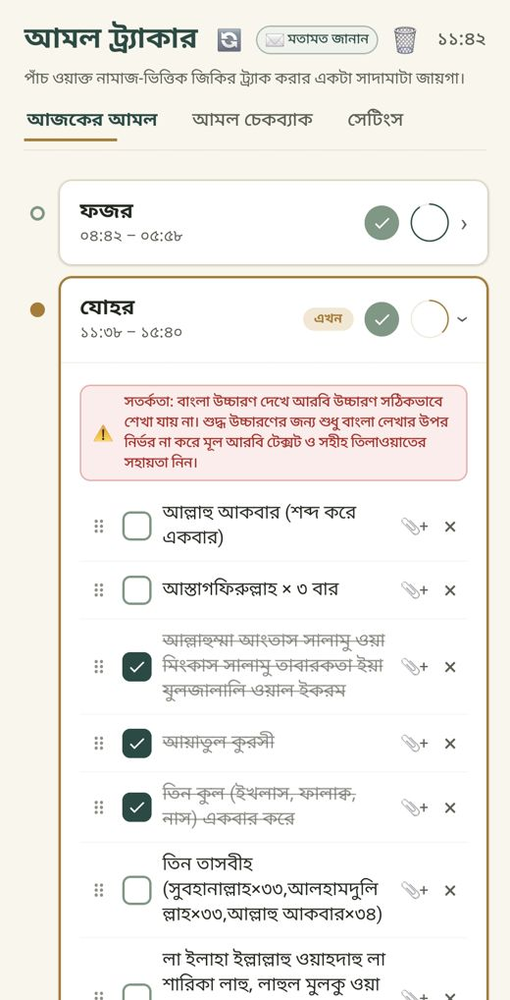
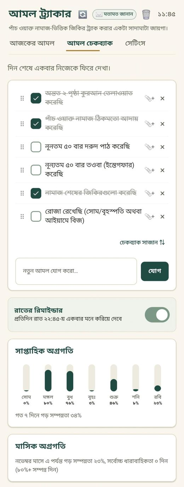
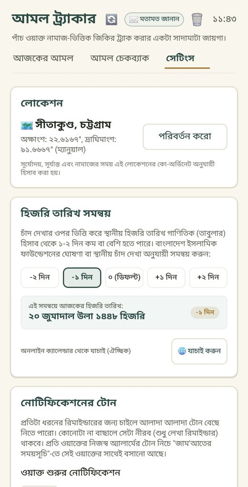
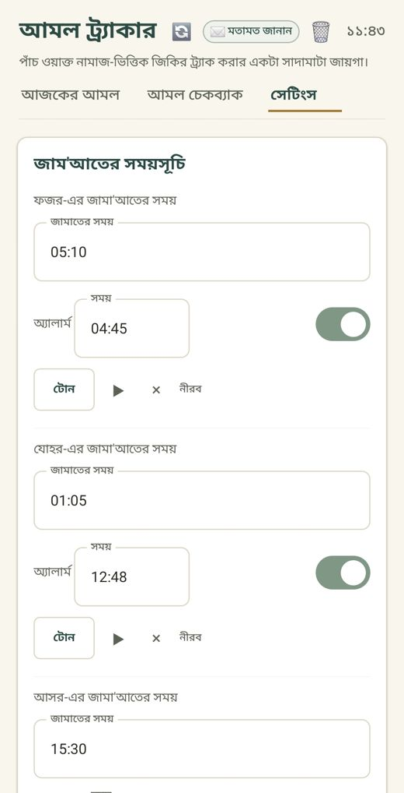

অ্যাপে যা যা আছে
- ওয়াক্তভিত্তিক আমলের চেকলিস্টফজর থেকে ইশা, প্রতি ওয়াক্তের আমল ও জিকির টিক দিয়ে রাখুন। নিজের আমল যোগ, মুছে ফেলা ও সাজানোও যায়।
- জামাতের অ্যালার্মপ্রতি ওয়াক্তের জামাতের সময় নিজে ঠিক করুন, পছন্দের টোন বেছে নিন।
- ওয়াক্ত শুরু ও শেষের রিমাইন্ডারওয়াক্ত শুরু হলে এবং শেষ হওয়ার ১৫ মিনিট আগে নোটিফিকেশন ও ভয়েস রিমাইন্ডার।
- হিজরি ও বাংলা তারিখস্থানীয় চাঁদ দেখা অনুযায়ী ±দিন সমন্বয়ের সুবিধা সহ।
- সূর্যোদয়, সূর্যাস্ত ও ইশরাকের সময়আপনার এলাকার (জিপিএস বা হাতে বাছাই) অবস্থান অনুযায়ী হিসাব।
- দরুদ ও ইস্তেগফার রিমাইন্ডারকত মিনিট পরপর এবং দিনের কোন সময়ে, সেটা আপনার হাতে।
- আমল চেকব্যাক ও অগ্রগতিরাতে দিনের হিসাব মিলিয়ে দেখুন। সাপ্তাহিক ও মাসিক অগ্রগতি দেখা যায়।
- হোমস্ক্রিন উইজেট ও বিশেষ আমলজুমার দিনের আমল, ঘুমানোর আগের আমল, সোম-বৃহস্পতি ও আইয়ামে বিজের রোজার স্মরণ।
স্ক্রিনশট




ইনস্টল করবেন যেভাবে
- APK ডাউনলোড করুন। উপরের সবুজ বাটনে চাপলে সর্বশেষ ভার্সন নেমে আসবে।
- ফাইলটা খুলুন। ফোন প্রথমবার "অজানা সোর্স থেকে ইনস্টল" অনুমতি চাইবে। যে ব্রাউজার বা ফাইল ম্যানেজার থেকে খুলছেন, তার জন্য অনুমতি দিন।
- ইনস্টল চাপুন। অ্যাপ খুলে লোকেশন বেছে নিন, তারপর জামাতের সময় ঠিক করে নিন।
- সঠিক সময়ে রিমাইন্ডার পেতে নোটিফিকেশনের অনুমতি দিন এবং অ্যাপের ব্যাটারি অপ্টিমাইজেশন বন্ধ রাখুন।
পরে আপডেট? অ্যাপের সেটিংসের নিচে "আপডেট চেক" বাটন আছে। নতুন ভার্সন এলে সেখান থেকেই নিয়ে নেওয়া যাবে।
অ্যাপটা Google Play Store-এ নেই, তাই ইনস্টলের সময় ফোন একটা সতর্কবার্তা দেখাতে পারে। এটা Play Store-এর বাইরের যেকোনো APK-র ক্ষেত্রেই হয়।